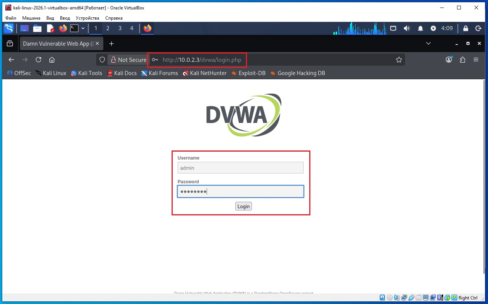
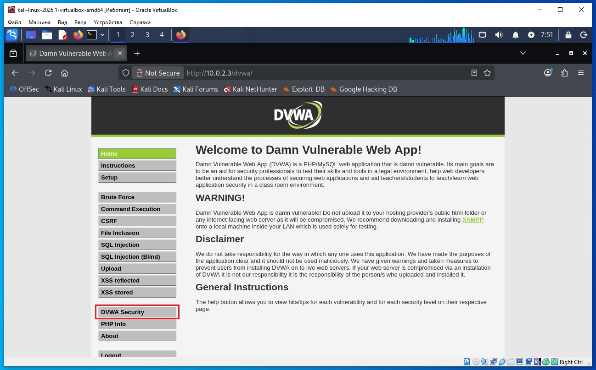
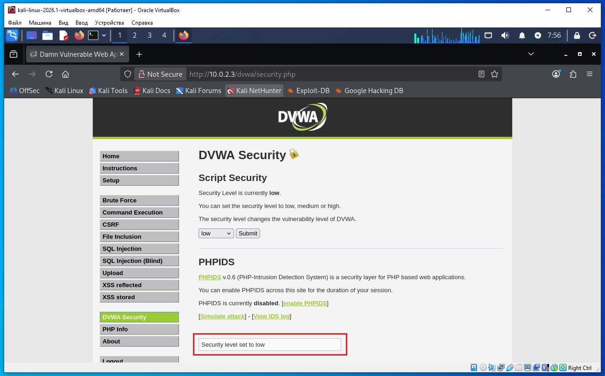
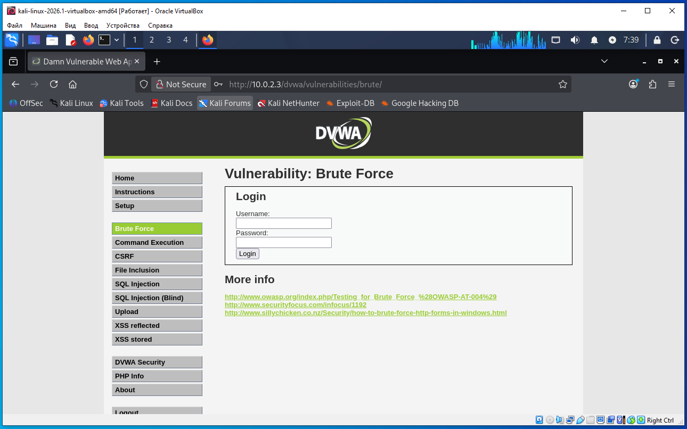
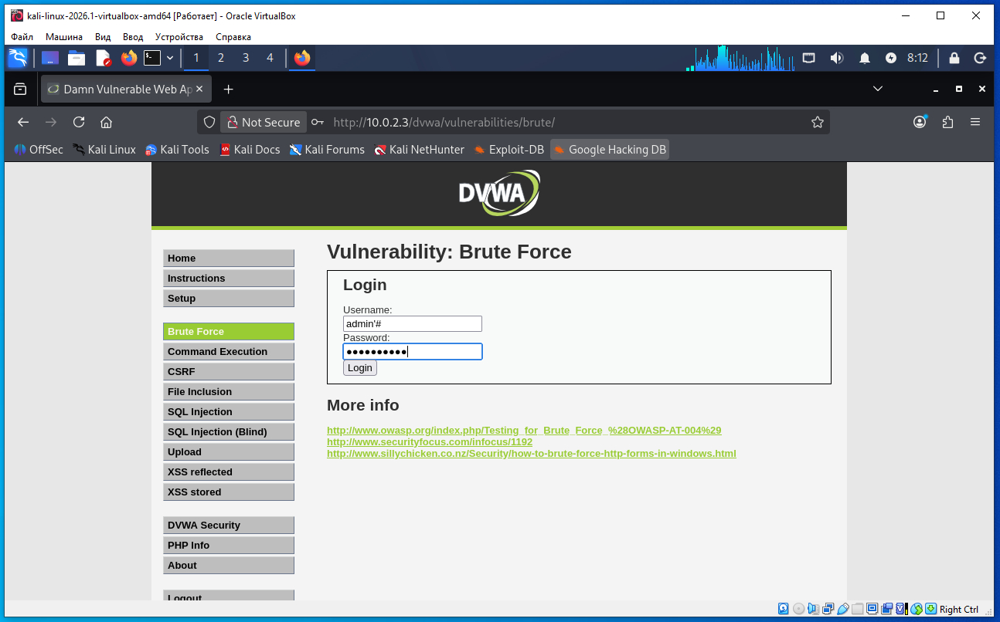
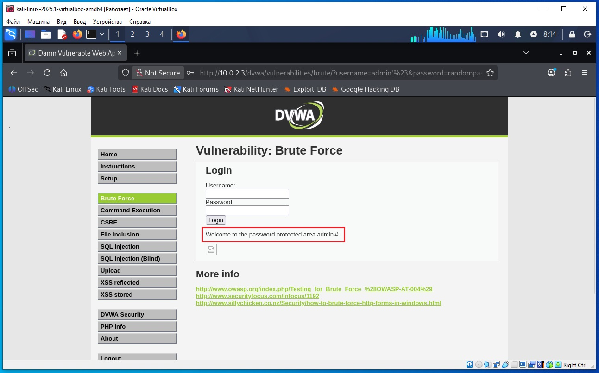

Предполагается что все действия выполняются на виртуальных машинах VirtualBox.
Необходимо определить IP с машиной Metasploitable 2. Для этого сначала определим наш IP и маску подсети, для этого дадим команду в терминале Kali:
ifconfig
В результатах вывода команды выше, можно увидеть такую строку:
inet 10.0.2.4 netmask 255.255.255.0
То есть наш IP 10.0.2.4 а диапазон IP адресов нашей сети 10.0.2.0/24 (это обяснялось ранее в предыдущих статьях).
Для обнаружения других компьютеров в сети и в том числе нашей удаленной машины Metasploitable 2, дадим команду в терминале Kali:
sudo netdiscover -r 10.0.2.0/24
В выводе команды:
10.0.2.2 08:00:27:3a:17:ed 1 60 PCS Systemtechnik GmbH 10.0.2.3 08:00:27:f1:18:5a 1 60 PCS Systemtechnik GmbH
10.0.2.2 - это виртуальный роутер, который управляет нашей сетью.
10.0.2.3 - это наша машина (по логике) с Metasploitable 2.
Проверим связь между нашей Kali и удаленной ВМ Metasploitable 2, дадим команду:
ping 10.0.2.3
Если сеть в VirtualBox настроена правильно, видим пинг идет, связь есть.
На Kali открываем веб- браузер Mozilla Firefox и в строку адреса вводим IP удаленной Metasploitable 2. После открытия страницы, нажимаем ссылку на странице DVWA.


В адресной строке браузера появился адрес (после нажатия ссылки DVWA):
http://10.0.2.3/dvwa/login.php
То есть после открытия веб- браузера на эту страницу DVWA можно было бы перейти сразу по ссылке:
http://10.0.2.3/dvwa/
И откроется та же страница DVWA входа.
На форме входа в DVWA логин/пароль следующие: admin/password.
После ввода логина/пароля в форму входа DVWA видим следующую страницу:

Это и есть наше веб- приложение DVWA которое мы будем взламывать для теста.
Нажимаем на ссылку DVWA Security:

На странице DVWA Security выбираем уровень сложности задания low и нажимаем кнопку Submit (скриншот ниже):

Как видим на скриншоте ниже установлен уровень сложности задания low:

Начинаем выполнять первое задание по Brute Force.
Нажимаем на ссылку Brute Force (выделено на скриншоте ниже):

Видим такую страницу с уязвимостью:

На этой странице следующие учетные данные логин/пароль admin/password. Давайте их введем что бы увидеть какой будет результат нашего взлома - эти логин/пароль мы будем в дальнейшем подбирать самостоятельно (скриншот ниже):

После ввода логин/пароль появилась строка:
Welcome to the password protected area admin
И внизу должен был бы отображаться логотип, но какой то баг.
Значит, мы ввели верный логин/пароль и после входа получили надпись:
Welcome to the password protected area admin
которая обозначает что мы успешно вошли.
В случае если неправильно ввести логин/пароль появляется сообщение (скриншот ниже):
Username and/or password incorrect.

Исходный код скрипта PHP который отвечает за вход можно посмотреть, если пролистать страницу вниз - мы увидим кнопку View Source:

Мы нажали кнопку View Source и появился исходный код PHP этой страницы логина/пароля:

Теперь давайте сделаем SQL инъекцию для этой страницы.
Для этого в поле username вводим следующее:
admin'#
Причем в этом выражении одинарная кавычка на клавиатуре находится срава - рядом с клавишей Enter.
Поле password необходимо заполнить любыми символами (скриншот ниже):

Заполнили, жмем кнопку Login (скриншот ниже) и как видим страница нам сообщила что мы осуществили вход:
Welcome to the password protected area admin'#

Давайте разберем буквально по шагам, как будто мы никогда раньше не видели SQL Injection.
Шаг 1. Пользователь открывает страницу
В браузере есть форма:
Username: [____________] Password: [____________] [Login]
Мы вводим
Username: admin'#
Пароль любая последовательность символов.
Password: sjdflkjslfjsdlkf
После нажатия кнопки Login браузер отправляет серверу запрос.
PHP получает эти данные.
Шаг 2. PHP получает введенные значения
Вот эта часть:
$user = $_GET['username'];
$pass = $_GET['password'];
Обратите внимание данные передаются через запрос GET (не POST).
Теперь переменные содержат
$user = "admin'#";
$pass = "sjdflkjslfjsdlkf";
То есть пока это просто обычные строки.
Шаг 3. Пароль превращается в MD5 ---
Следующая строка
$pass = md5($pass);
заменяет пароль его хэшем.
Было
sjdflkjslfjsdlkf
Стало
0b695362a1326b9cfdbb163e1763151b
Теперь
$user = "admin'#";
$pass = "0b695362a1326b9cfdbb163e1763151b";
Шаг 4. Формируется SQL-запрос
Самая важная строка
$qry = "SELECT * FROM users
WHERE user='$user'
AND password='$pass';";
PHP просто берет текст запроса и подставляет туда значения переменных.
PHP буквально делает замену.
Было
SELECT *
FROM users
WHERE user='$user'
AND password='$pass';
Стало
SELECT *
FROM users
WHERE user='admin'#'
AND password='0b695362a1326b9cfdbb163e1763151b';
Обратите внимание.
PHP вообще не знает ничего про SQL.
Он просто вставил текст.
Шаг 5. Этот текст отправляется MySQL
Теперь этот текст получает база данных.
Для MySQL это уже обычный SQL-запрос.
Шаг 6. MySQL начинает читать запрос
Она читает слева направо.
Сначала
SELECT *
потом
FROM users
потом
WHERE
потом
user='admin'
Пока всё нормально.
Шаг 7. MySQL встречает
Дальше она видит
#
А символ
#
в MySQL означает
"Дальше всё комментарий."
То есть база говорит
"Я больше ничего читать не буду."
Поэтому
'
AND password='0b695362a1326b9cfdbb163e1763151b';
вообще игнорируется.
Получается, что реально выполняется только
SELECT *
FROM users
WHERE user='admin'
И всё.
Проверки пароля больше нет.
Шаг 8. Что делает база?
База ищет
user = admin
В таблице есть запись
| user | password | | ----- | -------- | | admin | ... |
Она её находит.
Возвращает одну строку.
Шаг 9. Что получает PHP?
Вот здесь
$result = mysql_query($qry);
в переменной
$result
лежит найденная строка пользователя admin.
Шаг 10. Проверка количества строк
Дальше
mysql_num_rows($result)
означает
"Сколько строк вернула база?"
Вернулась одна строка.
Поэтому
mysql_num_rows($result) == 1
становится
1 == 1
Это
true
Значит выполняется
if (...)
{
Шаг 11. Получение аватара
Берётся
$avatar = mysql_result($result,0,"avatar");
То есть
"Из первой найденной строки возьми поле avatar."
Например
/hackable/users/admin.jpg
Шаг 12. Выводится сообщение
Теперь самое интересное.
Смотрите внимательно.
PHP НЕ пишет
echo mysql_result($result,0,"user");
Он пишет
echo $user;
А что находится в
$user
?
Не имя из базы.
А то, что мы ввели.
То есть
$user = "admin'#";
Поэтому выводится
Welcome to the password protected area admin'#
Это НЕ означает
что в базе есть пользователь
admin'#
Такого пользователя вообще нет.
Просто разработчик решил вывести содержимое переменной
$user
Что реально произошло
Можно представить процесс так:
Мы
│
│ admin'#
▼
PHP
│
│ вставило строку в SQL
▼
SELECT *
FROM users
WHERE user='admin'#'
AND password='...';
│
▼
MySQL
видит #
↓
остальное игнорирует
↓
выполняет
SELECT *
FROM users
WHERE user='admin'
↓
находит пользователя admin
↓
возвращает его PHP
↓
PHP говорит
"Вход успешный"
↓
печатает НЕ имя из базы
↓
печатает то,
что пользователь ввёл
↓
admin'#
Именно это и является одной из классических SQL-инъекций: пользовательский ввод изменил структуру SQL-запроса. Вместо проверки имени пользователя и пароля база данных выполнила запрос, который проверяет только имя пользователя, потому что оставшаяся часть запроса была превращена в комментарий. Это хороший пример того, почему нельзя напрямую вставлять пользовательский ввод в SQL-запросы без параметризованных запросов или экранирования данных.
Полный код скрипта PHP по кнопке View Source дан ниже:
<?php
if( isset( $_GET['Login'] ) ) {
$user = $_GET['username'];
$pass = $_GET['password'];
$pass = md5($pass);
$qry = "SELECT * FROM `users` WHERE user='$user' AND password='$pass';";
$result = mysql_query( $qry ) or die( '<pre>' . mysql_error() . '</pre>' );
if( $result && mysql_num_rows( $result ) == 1 ) {
// Get users details
$i=0; // Bug fix.
$avatar = mysql_result( $result, $i, "avatar" );
// Login Successful
echo "<p>Welcome to the password protected area " . $user . "";
echo '<img src="' . $avatar . '" />';
} else {
//Login failed
echo "<pre><br>Username and/or password incorrect.</pre>";
}
mysql_close();
}
?>